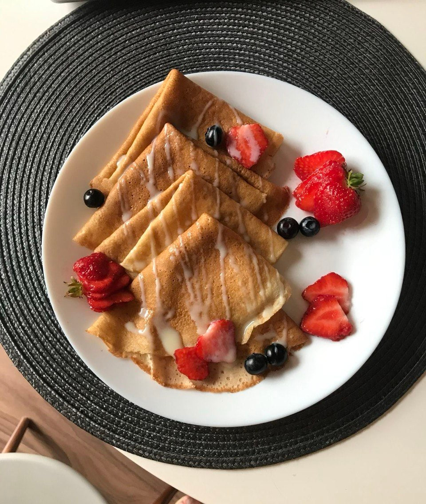
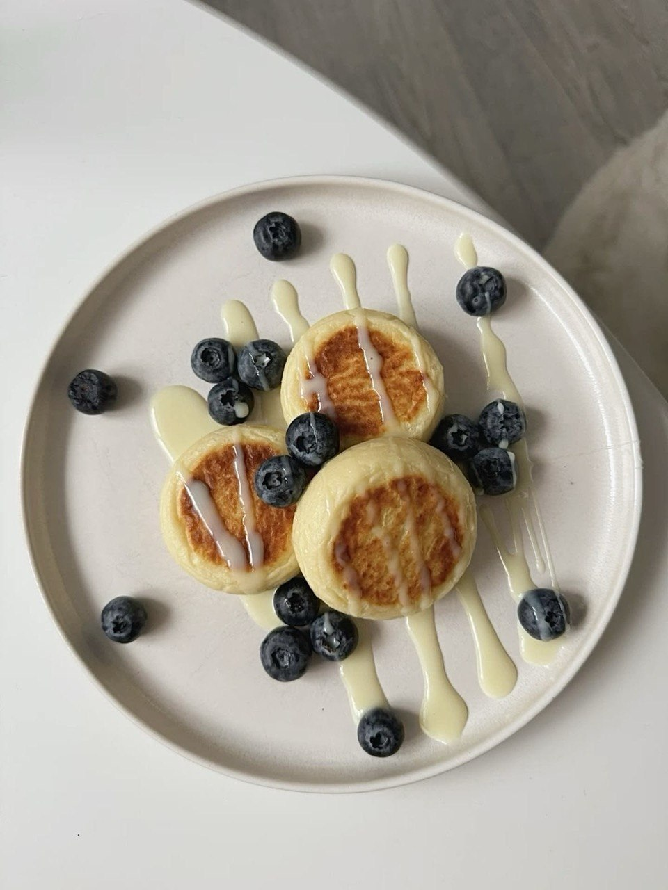
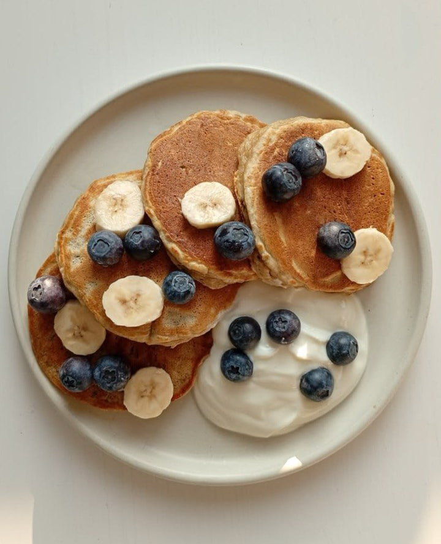
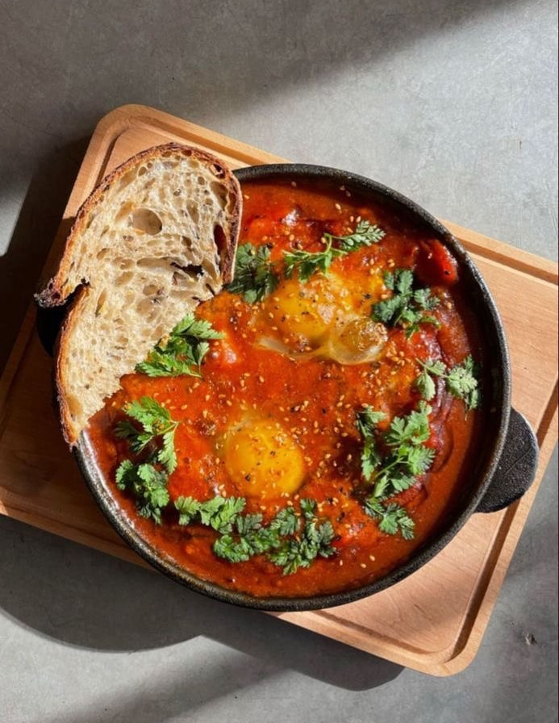

×
×
×
×
×
×Інгрідієнти:
Взбиваємо яйця,цукор та сіль. Добре нагріваємо молоко, та вливаємо його до яєць.
Просіюємо борошно частинами по три рази та між ними добре змішуємо наші інгрідієнти щоб не було комочків.
Розіргіваємо скворідку збризкуєте або змашуєте масло.
На таку порцію вийде приблизно 20 млинців, але кількість вже залежить якої товщини ви випікаєте.
Ці млинці підійдуть як для солодких та і для солених начинок. Приємного!
Інгрідієнти:
Беремо творог віджимаємо цого в марлі або протираємо через сито якщо він дуже вологий.Всипаємо манку, цукор, сіль та додаємо жовтки добре перемішуємо.
Нечіпаємо масу 10 хв щоб манка набухла та вібрала в себе вологу(масу також можна робити з вечора щоб не витрачати часу). Як наша маса постояла беремо борошно та притрушуємо поверхню для формування та формуємо сирнички.
Для приготування є два вибори на пателбні або в духовці(духовку розігріваємо на 180 градусів режим верх низ, в розігріту духовку кладемо наші сирнички які ми перед цим виклали на пергамент на 20хв, потім достаємо перевертаємо на іншу сторону та перемикаємо режим на верх низ з вентилятором)
Цей рецепт класичний, але ви можете експерементувати з начинками, навіть з солоними. Приємного!
Інгрідієнти:
Розділіть білки та жовтки. Збийте білки до піків. Жовтки перетріть із цукром. Додайте молоко, олію та дрібку солі —поєднайте.
Поступово введіть борошно зрозпушувачем. Перемішайте дооднорідності. Обережно (рухами знизу догори)вмішайте збиті білки, зберігаючи повітряну структуру.Прогрійте антипригарну пательню,тоді зменште вогонь до мінімуму — панкейки смажать без олії.
Коли на поверхні зʼявляться бульбашки (= 1 хв.), переверніть. Смажте ще приблизно 30 секунд з іншого боку.
Не перемішуйте тісто надто довго, бо надмірний розвиток клейковини може зробити панкейки більш щільними. Приємного!
Інгрідієнти:
Нашинкуйте цибулю, часник, зелень та помідори якщо використовуєте свіжі. Пательню розігріли додали олії та всипаємо цибулю з часником готуємо приблизно півтори хвили.
До пателні всипаємо помідори та додаємо спеції. Тушимо 5-7хв та після цього додаємо зелень та сир. Робимо лунки під яйця та вливаємо їх та чекаємо коли в нас звернеться білок.
Робіть тости та можете смакувати з пательні або як зазвичай засерверуйте по тарілочкам. Приємного!
Інгрідієнти:
Кабачок тремо, додаємо сіль, перець, борошно і яйце. Перемішуємо і обсмажцємо оладки з двох сторін.
Ці оладки подавайте з сметаною або вершковим соусом. Приємного!

Інгрідієнти:
В першу чергу промиваємо булгур та ставимо на плиту варитися 20хв, коли закипить додати дрібку солі. Поки булгур готується ставимо воду щоб зварити яйце, коли наша вода закипить покладіть яйце та варіть протягом 5 хв.
В нас є час зайнятися помідором, авокадо та шпинатом. Промиваємо овочі та нарізаємо, перевірте кашу якщо вода випарилась а 20хв не пройшло, скуштуйте та якщо вам по смаку додайте вершкове масло. Коли на таймері пройшло 5хв, візьміть тару полотенцем та підставте під холодну воду або просто віймить яйцу ложкою та перекладіть в холодну воду, так ви зможете легко почистити яйце.
Коли все готове викладайте на тарілку з нашими додатками чері, авокадо та шпинатом
Тут можно експерементувати та додавати ще мясо, сир та інші додатки щоб зробити прийом їжі ситнішим. Приємного!

Інгрідієнти:
Ставимо воду на яйця варимо 5хв. Нарізаємо або беремо готовий тост, підсмажуємо на сухій пательні. Беремо авокадо розрізаємо на дві частини та веделкою роздавлюємо до консистенції кашиці, помили руколу та чері та все це нарізали.
Яйця на тостах розрізаємо та посипаємо спеціями для більш яскравішого смаку.
Тут можно експерементувати та додавати ще вам хочеться, сир та інші додатки щоб зробити прийом їжі ситнішим. Приємного!

Інгрідієнти:
Беремо творог всипаємо борошно, цукор, сіль та добре замішуємо.
Беремо борошно та притрушуємо поверхню для формування та формуємо колбаску та ріжемо її на розмір варенечків.
Ставимо воду та в киплячу воду вкидаємо на 2-3хв після цього виймаємо та перекладаємо на пателню з вершковим маслом та обсмажуємо до скоринки або до вашої готовності
Цей рецепт класичний, але ви можете експерементувати з начинками, навіть з солоними. Приємного!